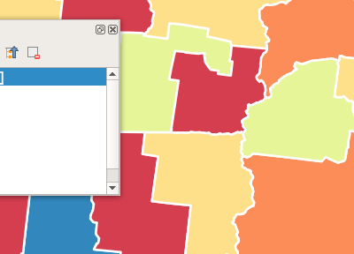
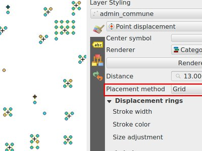
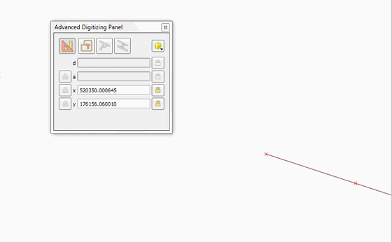
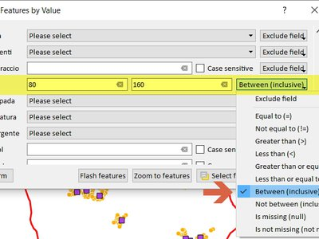
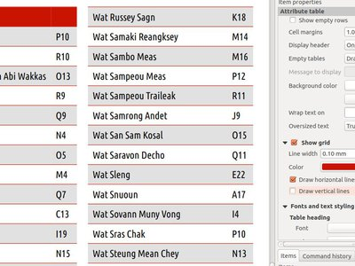
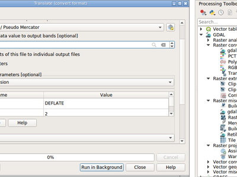

Modifications apportées par QGIS 3.0¶

La plus grande version de QGIS ! QGIS 3.0 est une révision en profondeur et un nettoyage de notre SIG Open Source bien-aimé. QGIS 3.0 apporte une liste massive de nouveaux changements - dont nous allons essayer de couvrir les points saillants ici. Comme toujours, nous vous rappelons que QGIS est un projet open source et si vous le pouvez, pensez à soutenir notre travail par le biais de dons, de sponsoring ou des contributions à la documentation du code, au site web et ainsi de suite.
Remerciements
We would like to thank the developers, documenters, testers and all the many folks out there who volunteer their time and effort (or fund people to do so). From the QGIS community we hope you enjoy this release! If you wish to donate time, money or otherwise get involved in making QGIS more awesome, please wander along to qgis.org and lend a hand!
QGIS is supported by donors and sponsors. A current list of donors who have made financial contributions large and small to the project can be seen on our donors list. If you would like to become and official project sponsor, please visit our sponsorship page for details. Sponsoring QGIS helps us to fund our six monthly developer meetings, maintain project infrastructure and fund bug fixing efforts. A complete list of current sponsors is provided below - our very great thank you to all of our sponsors!
QGIS est un logiciel libre et vous n’avez aucune obligation de payer quoi que ce soit pour l’utiliser. En fait, nous souhaitons encourager les gens à l’utiliser le plus possible, sans s’intéresser à leur état financier ou à leur statut social. Nous croyons que fournir aux gens des outils décisionnels spatiaux permettra d’améliorer la société.
- Sponsors de QGIS 3.0
- Général
- Fonctionnalité : Supprimer l’extension stats zonales
- Fonctionnalité : Supprimer l’extension convertisseur dxf2shp
- Fonctionnalité : Supprimer l’extension raster Oracle qui est orpheline
- Fonctionnalité : Supprimer le fournisseur TauDEM de la base de Processing
- Fonctionnalité : De l’aide supplémentaire et la possibilité de configurer l’emplacement des fichiers d’aide de QGIS.
- Fonctionnalité : Déplacer les gadgets Photo, WebView et FileName vers Pièce-jointe
- Fonctionnalité : Supprimer les fournisseurs OTB et lidartools de Processing
- Interface utilisateur
- Fonctionnalité : Permet la tabulation dans les docks flottants
- Fonctionnalité : Un contrôle plus fin du zoom avec la roue de la souris est fourni
- Fonctionnalité : Une barre de recherche a été ajoutée au dialogue de configuration des raccourcis
- Fonctionnalité : Barre de localisation
- Fonctionnalité : Plus d’édition en ligne non-bloquante
- Fonctionnalité : Ajout d’une option pour montrer à l’utilisateur les menus de combinaisons de couleurs
- Fonctionnalité : Configuration de couleur pour la décoration flèche du Nord du canevas de carte
- Fonctionnalité : Amélioration de « Sauver en tant qu’image » pour le canevas de carte
- Fonctionnalité : Basculer la visibilité des panneaux ouverts dans la fenêtre principale
- Fonctionnalité : Amélioration dans l’harmonisation de l’interface utilisateur
- Fonctionnalité : Ouverture de couches dans un seul groupe
- Fonctionnalités 3D
- Expressions
- Fonctionnalité : Nouvelles variables pour les expressions
- Fonctionnalité : nouvelle variable globale pour les expressions @qgis_locale
- Fonctionnalité : Nouvelles variables pour les expressions de paramétrage de carte
- Fonctionnalité : Nouvelles fonctions pour les expressions
- Fonctionnalité : Expose la variable @parent dans les fonctions pour agrégat
- Fonctionnalité : fonction Item_variables dans les compositions
- Documentation
- Symbologie
- Fonctionnalité : Visibilité des symboles de couche définie par les données
- Fonctionnalité : enregistrer et restaurer les palettes de couleurs utilisées pour les rendus en bande simple de pseudo-couleur.
- Fonctionnalité : Ajout de Points et Pouces pour les unités disponibles de symbole
- Fonctionnalité : Nouveau gadget de bouton de palette de couleurs
- Fonctionnalité : Le Gestionnaire de styles a été retravaillé et mis à jour
- Fonctionnalité : Support pour la configuration des couleurs et de la transparence sur éléments multiples pour les rendus raster
- Fonctionnalité : Affiche une jauge d’alpha dans le menu déroulant du bouton des couleurs
- Feature: Raster stretch toolbar actions support for pseudocolor renderer
- Fonctionnalité : Support pour la transparence dans le moteur de rendu en palettes de couleurs
- Fonctionnalité : Ajustement automatique des couleurs d’un raster lorsque le canevas est mis à jour
- Fonctionnalité : Contrôle des marges du contenu des annotations
- Fonctionnalité : Les annotations peuvent être stylisées avec des styles de symboles pleins
- Fonctionnalité : Moteur de rendu pour groupe de points
- Fonctionnalité : Nouveaux algorithmes pour la coloration de cartes dans QGIS 3.0
- Fonctionnalité : Nouvelle option pour couleurs prédéfinies dans une palette de couleurs
- Fonctionnalité : Permet de désactiver temporairement toutes les couches de symboles
- Fonctionnalité : Mise en style facile des raster à valeurs discrètes
- Étiquetage
- Diagrammes
- Rendu
- Fonctionnalité : Support pour couche en direct
- Fonctionnalité : Déclenchement de la mise à jour d’une couche ou des actions de la couche à partir du signal NOTIFY de PostgreSQL
- Fonctionnalité : Le résultat du cache de l’étiquetage évite les retracés inutiles lors du rafraîchissement du canevas
- Fonctionnalité : Moteur de rendu pour grille de déplacement de points
- Numérisation
- Fonctionnalité : Sélection d’un ensemble de sommets dans l’outil Nœud
- Fonctionnalité : Ajout de l’option pour une valeur Z par défaut
- Fonctionnalité : Déplacer une entité bénéficie maintenant de la Numérisation avancée
- Fonctionnalité : Ajout de la fonctionnalité copier/déplacer une entité à l’outil de carte d’entité
- Fonctionnalité : Tracé avec décalage
- Fonctionnalité : Réorganisation de l’outil de Sommet
- Fonctionnalité : Outil de Sommet : ajout de sommets avec le marqueur du point du milieu
- Fonctionnalité : Outil de Sommet : prolongement de ligne
- Fonctionnalité : Outil de Sommet : support pour le panneau de numérisation avancée
- Gestion des Données
- Fonctionnalité : Recentrage sur l’entité courante, dans la table d’attributs
- Fonctionnalité : Carte de l’emprise du SCR dans les propriétés du projet
- Fonctionnalité : Support pour stockage auxiliaire
- Fonctionnalité : Réorganisation des métadonnées
- Fonctionnalité : Boîte de dialogue unifiée pour la gestion des sources de données
- Fonctionnalité : Suppression de l’outil de chargement OSM
- Formulaires et widgets
- Fonctionnalité : Permet le contrôle des étiquettes pour les widgets individuels d’édition
- Fonctionnalité : Permet la configuration des boutons de lien/relâche d’entité dans le gadget d’édition de relation
- Fonctionnalité : Visibilité conditionnelle des onglets et des boîtes de groupe
- Fonctionnalité : Les gadgets par défaut pour l’édition sont plus intelligents et peuvent être sélectionnés par les extensions
- Fonctionnalité : Les contraintes de champ peuvent être imposées ou non
- Fonctionnalité : Ajout d’actions portant sur la couche
- Fonctionnalité : Affiche les valeurs du champ dans la complétion automatique dans le mode de filtre de forme
- Fonctionnalité : Ajout de raccourcis pour zoom sur entités et entités éclairs dans le dialogue de sélection par formulaire
- Fonctionnalité : Ajout de entre/pas entre aux champs numériques dans la sélection par forme
- Légende des couches
- Composeur de cartes
- Fonctionnalité : Contrôle de l’affichage des lignes horizontales et verticales de la grille des tables de Composeur
- Fonctionnalité : Dépose un qpt dans QGIS pour créer un nouveau Composeur à partir d’un gabarit
- Fonctionnalité : Permet la personnalisation de l’espacement des lignes pour les étiquettes dans la légende de Composeur
- Fonctionnalité : Permet le choix du SCR pour les éléments de la carte
- Fonctionnalité : Maintenir la touche Shift lors du tracé d’une ligne/polygone contraint les angles de ligne.
- Fonctionnalité : Plus de propriétés définies par les données
- Fonctionnalité : Réorganisation du Composeur de cartes
- Outils d’Analyse
- Traitement
- Fonctionnalité : Nouvel algorithme pour le décalage des lignes
- Fonctionnalité : Nouvel algorithme pour créer des zones tampons unilatérales
- Fonctionnalité : Ajout du choix de la méthode de simplification à simplification
- Feature: support for output geometry types in models
- Feature: Angle threshold for smooth algorithm
- Feature: Better support for Z/M dimensions and curved geometries
- Feature: Raster analysis algorithms added to Processing
- Fonctionnalité : Nouvel algorithme pour extraire des nœuds spécifiques
- Feature: Expose zonal statistics from Zonal statistics plugin in toolbox
- Feature: Add a spatialite execute SQL algorithm
- Fonctionnalité : Nouvel algorithme pour prolonger des lignes
- Fonctionnalité: Nouvel algorithme d’extraction à l’aide d’une expression
- Fonctionnalité : Algorithme d’import dans une base de données SpatiaLite
- Fonctionnalité: Algorithmes d’interpolation
- Feature: New algorithm to compute geometry by expression
- Feature: Snap geometries to layer algorithm
- Feature: New input type for expressions
- Feature: SplitWithLines
- Feature: Pole of inaccessibility algorithm
- Feature: Extract by attribute can extract for null/notnull values
- Feature: Create attribute index algorithm
- Feature: New “drop geometries” algorithm
- Feature: New universal “basic stats for field” algorithm
- Feature: Port heatmap plugin to processing algorithm
- Feature: New algorithm to orthagonalize geometries
- Feature: Network analysis algorithms
- Feature: Export processing models as PDF/SVG
- Feature: New algorithm to truncate tables
- Feature: Added ‘invalid feature handling’ option
- Feature: Algorithm to fix invalid geometries using native makeValid() implementation
- Feature: Add search to Get Scripts and Models dialog
- Feature: Generic centroid algorithm
- Feature: Improved Extract nodes algorithm
- Feature: New algorithm for translating (moving) points
- Feature: Improved processing modeler window
- Feature: New raster unique values report algorithm
- Fonctionnalité : Suppression de TauDEM de la base du module de Traitements
- Feature: Download a file from Processing
- Feature: Optimised points along geometry algorithm
- Feature: Sort by expression algorithm
- Options de l’application et du projet
- Explorateur
- Pilotes de données
- Feature: New unified “add layer” dialog
- Fonctionnalité: GeoPackage
- Feature: Support all GDAL writable raster formats for “Save as” dialog on raster layers
- Feature: Support for Z/M geometries in gpkg, spatialite and memory layer provider
- Feature: Unique and not-null constraint handling
- Fonctionnalité : Intégration de GeoNode
- Feature: Detect literal default values for spatialite provider
- Feature: Create attribute index support for spatialite provider
- Feature: Add support for arrays
- Feature: Support for HStore in PostGIS data provider
- Feature: Add auto-discovery of relations for PostgresQL
- Feature: Data dependencies between layers
- Feature: dxf export: support reprojection
- Feature: Load/save style in database for GPKG and Spatialite
- Feature: Improved handling of defaults
- QGIS Server
- Extensions
- Feature: Remove trusted status from Plugin Manager
- Feature: Offline editing: Add flag to only copy selected features
- Fonctionnalité : Intégration de GDALTools au module de Traitements
- Fonctionnalité : permet d’installer des extensions à partir de fichiers ZIP locaux
- Fonctionnalité : Les extensions peuvent fournir une aide personnalisée dans la fenêtre Expression
- Programmation
Sponsors de QGIS 3.0¶


Argent¶
AERO ASAHI Corporation |
QGIS user group Denmark |
ARTOGIS a/s |
QGIS user group Germany |
OPENGIS.ch GmbH |
Terraplan |
Office of Public Works, Flood Risk Management and Data Management Section |
WIGeoGIS |


Bronze¶
 Bronze : 500 EUR
Bronze : 500 EUR
2D3D.GIS |
Integrate Sustainability Pty Ltd |
Ager Technology |
LandPlan OS GmbH |
|
Alta ehf |
Lutra Consulting |
Asociación Geoinnova |
MHTC Ltd |
|
Automatic Knowledge |
MappingGIS |
|
BGEO Open GIS, SL |
Mapzen |
Cawdor Forestry |
Mierune LLC |
Chartwell Consultants Ltd. |
OSGeo.JP |
City of Canning |
Open Geo Groep |
City of Canning |
Pixalytics |
Datenbankgesellschaft mbH |
QGIS user group Brazil |
Dr. Kerth + Lampe Geo-Infometric GmbH |
QGIS user group Sweden |
|
FORNAT AG |
QTibia Engineering |
Forest Design SRL |
Royal Borough of Windsor and Maidenhead |
GAIA mbH |
SOLTIG (Soluciones en Tecnologías de Información Geográfica) |
GIS Support Sp. z o.o. |
Septima |
GKG Kassel, (Dr.-Ing. Claas Leiner) |
Solargis s.r.o. |
Gaia3D, Inc. |
Syddjurs Kommune |
Gemeente Gouda |
TerreLogiche |
GeoS Geodätische Software Andreas Hellinge |
Trage Wegen vzw |
Geographica |
Urbsol |
Gis3W |
WAGNER-IT |
|
Infraplan Engineering Services Pvt. Ltd. |
WhereGroup GmbH & Co. KG |
Ingenieurbüro Kauppert |
tkt teleconsult Kommunikationstechnik GmbH |
Insurance Australia Group Limited (IAG) |


Général¶
Fonctionnalité : Supprimer l’extension stats zonales¶
Elle est maintenant entièrement disponible via Processing qui est l’endroit logique où elle doit se trouver.
Fonctionnalité : Supprimer l’extension convertisseur dxf2shp¶
Cette fonction est disponible dans OGR et une extension QGIS dédiée n’a plus lieu d’être pour achever cette tâche
Fonctionnalité : Supprimer le fournisseur TauDEM de la base de Processing¶
TauDEM est un ensemble d’outils assez spécifiques et il demande l’installation d’autres outils supplémentaires. Nous avons donc décidé de l’offrir en tant que fournisseur séparé, réduisant ainsi la taille du code de base et les efforts de maintenance.
Fonctionnalité : De l’aide supplémentaire et la possibilité de configurer l’emplacement des fichiers d’aide de QGIS.¶
Des boutons supplémentaires d’aide pour les algorithmes et les dialogues sont ajoutés et pointent maintenant vers la documentation en ligne de QGIS.
La configuration permet d’accéder à l’aide contextuelle localisée en linge, soit sur le réseau de l’organisation, soit dans l’ordinateur local. Il est aussi possible de combiner des sources différentes d’aide.

Cette fonctionnalité a été développée par Alexander Bruy
Fonctionnalité : Supprimer les fournisseurs OTB et lidartools de Processing¶
La nouvelle logique est de développer des fournisseurs d’extension qui soient capable de suivre le cycle d’évolution des logiciels externes.
Interface utilisateur¶
Fonctionnalité : Permet la tabulation dans les docks flottants¶
Pour les versions de qt > 5.6, il est possible de coller plusieurs docks flottants sur la même fenêtre flottante et ils seront distribués dans des onglets différents https://woboq.com/blog/qdockwidget-changes-in-56.html

Fonctionnalité : Un contrôle plus fin du zoom avec la roue de la souris est fourni¶
Certains appareils de pointage / souris (particulièrement sur mac) ont des résolutions plus fines. Ils transmettent les événements de roue de souris à des fréquences plus élevées mais avec des valeurs delta plus petites. Les actions de zoom sur ces appareils n’étaient pas possible lors d’actions rapides de zoom. Cela est corrigé dans 3.0.
Cette fonctionnalité a été développée par Matthias Kuhn
Fonctionnalité : Une barre de recherche a été ajoutée au dialogue de configuration des raccourcis¶
Supporte la recherche par nom de l’action ou du raccourci

Cette fonctionnalité a été développée par Alexander Bruy
Fonctionnalité : Barre de localisation¶
La barre de localisation est une facilité de recherche rapide, toujours prête, générique et enfichable située dans le coin inférieur gauche de QGIS.
Elle permet, à présent, de rechercher le nom des algorithmes, actions et couches, mais aussi de sélectionner une entité dans la couche active courante en tapant une valeur d’attribut.
Elle peut être étendue « facilement », de sorte que tout le monde peut créer un QgsLocatorFilter pour son service de géocodage national ou sa facilité de recherche en-ligne ou dans une base de données.

Cette fonctionnalité a été développée par Nyall Dawson
Fonctionnalité : Plus d’édition en ligne non-bloquante¶
- dimensionnement des unités de carte
- éditeurs de mélangeur de couleurs et de rampe aléatoire limitée
- change les couleurs d’une liste directement dans le panneau de style
- change directement les couleurs et les symboles dans Composeur
directement affiché dans le panneau de style
Fonctionnalité : Configuration de couleur pour la décoration flèche du Nord du canevas de carte¶
La configuration de la couleur de la décoration flèche du Nord a été ajoutée à tous les canevas de carte

Cette fonctionnalité a été développée par Mathieu Pellerin
Fonctionnalité : Amélioration de « Sauver en tant qu’image » pour le canevas de carte¶
La fonction de « Sauver en tant qu’image » du canevas de carte a été étendue et offre maintenant aux utilisateurs la possibilité de modifier à la volée l’échelle, la résolution et l’emprise. L’emprise peut être fixée avec un rapport hauteur-largeur. Une fonction pour sauver en PDF a aussi été ajoutée pour exporter rapidement le canevas de carte dans un PDF indépendant de la résolution.

Cette fonctionnalité a été financée par Andreas Neumann (financement partiel).
Cette fonctionnalité a été développée par Mathieu Pellerin
Fonctionnalité : Basculer la visibilité des panneaux ouverts dans la fenêtre principale¶
Accessible par : - Menu Voir > Basculer visibilité panneaux - raccourci clavier Ctrl+Tab

Cette fonctionnalité a été développée par Mathieu Pellerin
Fonctionnalité : Amélioration dans l’harmonisation de l’interface utilisateur¶
Ce travail qui est financé par le programme de subvention QGIS « harmoniser les contrôles de l’IU », est maintenant fini et fusionné dans le maître. Les tâches suivantes ont été réalisées pour ce travail :
- Toutes les API transparence/opacité/alpha ont été standardisées en setOpacity() et opacity(). Les méthodes acceptent une valeur double précision entre 0 (transparent) et 1 (opaque), en cohérence avec l’API de Qt.
- Un nouveau gadget QgsOpacityWidget a été créé, et est maintenant utilisé partout dans l’IU pour fixer l’opacité. Cela encourage un comportement et un aspect uniformes pour les contrôles d’opacité dans l’ensemble de l’application.
- Rotation a été standardisée dans l’API et l’IU, de manière a toujours être appliquée dans le sens des aiguilles d’une montre. Tous les gadgets de rotation ont été mis à jour pour accepter une valeur entre -360 et +360.
- Les projets 2.x qui utilisent des rotations pour les labels et des rotations définies par l’utilisateur sont automatiquement mis à jour quand ils sont ouverts par 3.0
- Les API d’échelle ont été rendues cohérentes entre elles dans toute l’API QGIS. Le mélange confus des dénominateurs d’échelle et des échelles vraies a été retiré, maintenant, tout est fait avec des dénominateurs d’échelle. Le comportement de tous les appels de gamme d’échelle est standardisé avec un sens commun pour les échelles min/max (et la documentation explicite de l’API à cet effet)
- Tous les contrôles d’échelle utilisent maintenant les gadgets d’échelle pour la cohérence de toute l’IU.
- L’étiquetage utilise maintenant la même définition pour l’échelle min/max que le reste de l’IU, et les projets existants sont automatiquement mis à jour quand ils sont ouverts par 3.0.
- Corrections de la plupart des bogues restants liés à l’utilisation des échelles, y compris les bogues plantant les limites d’échelle basées sur des règles.
Merci aux donateurs du projet et du PSC de QGIS pour avoir sponsorisé ce travail et lui permettre de continuer !
Cette fonctionnalité a été financée par les donateurs et sponsors de QGIS
Cette fonctionnalité a été développée par Nyall Dawson
Fonctionnalité : Ouverture de couches dans un seul groupe¶
Si vous essayez de lire plusieurs sous-souches, vous pouvez maintenant toutes les ouvrir dans un même groupe, dans la légende.
Cette fonctionnalité a été financée par Kartoza
Cette fonctionnalité a été développée par Etienne Trimaille
Fonctionnalités 3D¶
Fonctionnalité : Visualiseur de carte et génération de terrain en 3D¶
Nous avons un tout nouveau visualiseur interne de carte 3D dans QGIS ! Le visualiseur de carte 3D affiche les cartes 2D (rendues à partir des couches de projet) au-dessus du terrain. Par défaut le terrain est une surface plate, mais il est possible d’utiliser des couches raster avec un modèle numérique de terrain comme source pour les données de hauteur.
Utilisez le menu Voir > Nouveau visualiseur de carte 3D pour ajouter un visualiseur 3D au projet. Ceci créera un nouveau gadget dock comprenant le canevas de carte 3D. Le visualiseur 3D utilise les mêmes contrôles que le visualiseur de carte 2D pour parcourir la carte en utilisant la souris (glisser la carte pour la déplacer, roue de la souris pour le zoom) ou les touches de flèches du clavier. De plus, il y a des contrôles spécifiques pour la caméra dans les vues 3D : il est possible de tourner et d’incliner la caméra par un des moyens suivants :
- en glissant la souris avec le bouton du milieu pressé
- en pressant sur Shift et en glissant la souris avec le bouton gauche pressé
- en pressant sur Shift et en utilisant les touches haut/bas/gauche/droit

Cette fonctionnalité a été financée par QGIS.ORG
Cette fonctionnalité a été développée par Martin Dobias (Lutra Consulting)
Fonctionnalité : Moteur de rendu 3D pour les couches¶
Dans la configuration par défaut, les couches sont rendues en images 2D drapées sur le terrain. Il est cependant possible d’avoir une meilleure utilisation de l’univers 3D en configurant des moteurs de rendu 3D pour certaines couches. Avec les moteurs de rendu 3D, les données peuvent être représentées en tant qu’objets 3D dans les visionneuses 3D - c’est actuellement possible avec les couches vecteurs (tout type de géométrie - point, ligne ou polygone). Une visualisation bien meilleure est ainsi possible, par exemple :
- des polygones représentant l’empreinte des bâtiments peuvent être extrudés (ayant même leur hauteur définie par des données) pour achever une impression de 3D
- des points représentant l’emplacement d’arbres peuvent être rendus avec des symboles 3D d’arbres (formes géométriques simples ou modèles 3D existants lus à partir de format de fichiers supportés)
Pour configurer les moteurs de rendu 3D, utilisez le dock de gadget de style de couche ou le dialogue de propriétés des couches vecteurs - il y a un nouvel onglet pour la configuration des moteurs de rendu 3D.

Cette fonctionnalité a été financée par QGIS.ORG
Cette fonctionnalité a été développée par Martin Dobias, Peter Petrik (Lutra Consulting)
Expressions¶
Fonctionnalité : Nouvelles variables pour les expressions¶
Ajout des variables @project_crs et @project_crs_definition pour retourner le SCR du projet courant
Fonctionnalité : nouvelle variable globale pour les expressions @qgis_locale¶
Renvoie la localisation courante utilisée par QGIS. Par défaut c’est la localisation du système courant. Si l’utilisateur active une autre localisation dans les paramètres de QGIS alors cette dernière sera renvoyée.

Cette fonctionnalité a été développée par Alexander Bruy
Fonctionnalité : Nouvelles variables pour les expressions de paramétrage de carte¶
- map_crs, map_crs_definition: retrieves crs details for map
- map_units: retrieves units for map (eg 'meters','degrees')
Cette fonctionnalité a été financée par North Road
Cette fonctionnalité a été développée par Nyall Dawson (North Road)
Fonctionnalité : Nouvelles fonctions pour les expressions¶
Expressions pour Atlas
- atlas_layerid et atlas_layername : renvoient l’identifiant de couche et le nom de couche de la couche courant dans l’atlas.
Expressions pour agrégat
- array_agg(expression, grouper_par, filtre) : Renvoie un tableau de valeurs regroupées à partir d’un champ ou d’une expression.
Expressions pour tableau
Nouveau groupe contenant des fonctions d’expression pour la création et la manipulation de tableaux (également appelés structures de liste de données). L’ordre des valeurs dans le tableau est importante, contrairement à la structure de données en « dictionnaire », où l’ordre des paires de clé-valeur n’est pas pertinent et les valeurs sont identifiées par leurs clés.
- array(valeur1, valeur2, …) : Renvoie un tableau contenant toutes les valeurs passées comme paramètre.
- array_append(tableau, valeur) : Renvoie un tableau avec la valeur donnée ajoutée à la fin.
- array_cat(tableau1, tableau2, …) : Renvoie un tableau contenant tous les tableaux donnés concaténés.
- array_contains(tableau, valeur) : Renvoie vrai si un tableau contient la valeur donnée.
- array_distinct(tableau) : Renvoie un tableau contenant les valeurs distinctes du tableau donné.
- array_find(tableau, valeur) : Renvoie l’index (0 pour le premier) d’une valeur dans un tableau. Renvoie -1 si la valeur n’est pas trouvée.
- array_first(tableau) : Renvoie la première valeur d’un tableau
- array_get(tableau, index): Renvoie la Nième (0 correspondant à la première) valeur d’un tableau.
- array_insert(tableau, pos, valeur) : Renvoie un tableau avec la valeur donnée insérée à la position donnée.
- array_intersect(tableau1, tableau2) : Renvoie vrai si l’un des éléments du tableau1 est présent dans tableau2
- array_last(tableau) : Renvoie la dernière valeur d’un tableau.
- array_length(tableau) : Renvoie le nombre d’éléments dans un tableau.
- array_prepend(tableau, valeur) : Renvoie un tableau avec la valeur donnée insérée au début du tableau.
- array_remove_all(tableau, valeur) : Renvoie un tableau dont les entrées correspondantes à la valeur donnée ont été supprimées.
- array_remove_at(tableau, pos) : Renvoie un tableau dont l’index donné a été supprimé.
- array_reverse(tableau) : Renvoie le tableau donné avec les valeurs dans l’ordre inverse.
- array_slice(tableau, pos_début, pos_fin) : Renvoie une partie du tableau. La tranche est définie par les arguments pos_début et pos_fin.
- array_to_string(tableau, délimiteur, valeur_vide) : Concatène les éléments du tableau en une chaîne de caractères séparée par un délimiteur et en utilisant en option une chaîne de caractères pour les valeurs vides.
- regexp_matches(chaîne, regex, valeur_vide) : Renvoie un tableau de toutes les chaînes capturées par les groupes de capture, dans l’ordre dans lequel les groupes eux-mêmes apparaissent dans l’expression régulière fournie agissant sur la chaîne.
- string_to_array(chaîne, délimiteur, valeur_vide) : Découpe une chaîne de caractères en un tableau en utilisant le délimiteur et l’éventuelle chaîne de remplacement pour les valeurs vides.
Expressions pour les couleurs
- create_ramp(carte, discrète) : Renvoie une rampe de dégradé à partir d’une carte de valeurs de couleurs dans une chaîne et d’étapes.
Expressions pour date et heure
- epoch(date) : Renvoie l’intervalle en millisecondes entre l’époque UNIX et une date donnée.
Expressions générales
- env(nom) : Retourne le contenu d’une variable d’environnement en tant que chaîne de caractères. Si la variable n’est pas trouvée, NULL sera renvoyé.
- raster_statistic(couche, bande, propriété) : Renvoie les statistiques d’une couche raster. Propriété : min/max/avg/range/stdev/sum
- with_variable(nom, valeur, nœud) : Cette fonction définit une variable pour tout code d’expression qui sera fourni comme troisième argument. Ceci n’est utile que pour des expressions compliquées, où la même valeur calculée doit être utilisée dans différents endroits.
Expressions pour la géométrie
- extend(géométrie, distance_début, distance_fin) : Allonge une ligne par des valeurs spécifiques en début et fin de ligne
- hausdorff_distance(géométrie a, géométrie b, fraction_densification) : Renvoie la distance de Hausdorff entre les deux géométries. C’est essentiellement une mesure de la dissimilarité entre les deux géométries, une petite distance indiquant que les géométries sont assez similaires.
- inclination(inclination(point_a, point_b) : Renvoie l’inclinaison mesurée du zénith (0) au nadir (180) du point_a au point_b.
- make_circle(centre, rayon, segment) : Crée un polygone en forme de cercle segmenté.
- make_ellipse(centre, axe_semi_majeur, axe_semi_mineur, azimut, segment) : Crée un polygone en forme d’ellipse segmentée.
- make_regular_polygon(centre, rayon, nombre_cotés, cercle) : Crée un polygone régulier.
- make_triangle() : pas d’aide disponible
- minimal_circle(géométrie, segment) : Renvoie le cercle de minimal entourant une géométrie. Il représente le cercle minimum qui renferme toutes les géométries dans l’ensemble.
- offset_curve(géométrie, distance, segments, joint, limite_pointe) : Renvoie une géométrie formée en décalant sur un côté une géométrie de type ligne. Les distances sont exprimées dans le Système Spatial de Référence de cette géométrie.
- oriented_bbox(géom) : Renvoie une géométrie qui représente l’emprise minimale orientée d’une géométrie en entrée.
- pole_of_inaccessibility(géométrie, tolérance) : Calcules le pôle d’inaccessibilité approximatif pour une surface, qui est le point de la surface le plus éloigné de ses bords. Cette fonction utilise l’algorithme “polylabel” (Vladimir Agafonkin, 2016) qui est une approche itérative garantissant de trouver le véritable pôle d’inaccessibilité moyennant une certaine tolérance.
- simplify(géométrie, tolérance) : Simplifie une géométrie en supprimant des nœuds basé sur un seuil de distance (c’est-à-dire l’algorithme de Douglas Peucker). L’algorithme conserve les grands écarts dans les géométries et réduit le nombre de nœuds dans les segments presque droits.
- simplify_vw(géométrie, tolérance) : Simplifie une géométrie par suppression de nœuds basé sur un seuil de surface (algorithme de Visvalingam-Whyatt). L’algorithme supprime les arêtes qui créent de petites surfaces dans les géométries, par ex. les pics très étroits ou les segments quasi alignés.
- smooth(géométrie, itérations, décalage, longueur_min, angle_max) : Lisse une géométrie en ajoutant des nœuds supplémentaires qui arrondissent les coins de la géométrie.
- single_sided_buffer(géométrie, distance, segments, joint, limite_pointe) : Renvoie une géométrie formée par un tampon appliqué sur un seul côté d’une géométrie de type ligne. Les distances sont exprimées dans le Système Spatial de Référence de cette géométrie.
Propriété des couches
- crs_description : Renvoie la description du SCR de la couche.
Expressions pour dictionnaire
Ce groupe contient des fonctions d’expression pour la création et la manipulation de structures de données en dictionnaire (également appelées objets de dictionnaire, paires de valeurs-clés ou tableaux associatifs). On peut assigner des valeurs à des clés données. L’ordre des paires clé-valeur dans l’objet cartographique n’est pas pertinent.
- map(clé1, valeur1, clé2, valeur2, , …) : Renvoie un dictionnaire contenant toutes les clés et valeurs passées en tant que paires de paramètres.
- map_akeys(dico) : Renvoie toutes les clés d’un dictionnaire dans un tableau.
- map_avals(dico) : Renvoie toutes les valeurs d’un dictionnaire dans un tableau.
- map_concat(dico1, dico2, …) : Renvoie un dictionnaire contenant toutes les paires des dictionnaires donnés. Si deux dictionnaires contiennent la même clé, la valeur du second sera renvoyée.
- map_delete(dico, clé) : Renvoie un dictionnaire dont la clé donnée et sa valeur correspondante ont été supprimées.
- map_exist(dico, clé) : Renvoie vrai si la clé donnée est présente dans le dictionnaire.
- map_get(dico, clé) : Renvoie la valeur d’un dictionnaire associée à la clé donnée.
- map_insert(dico, clé, valeur) : Renvoie un dictionnaire avec la paire clé/valeur insérée.
Couches de carte
Nouveau groupe contenant la liste des couches qui sont disponibles dans le projet courant. Renvoie l’identifiant interne des couches. Ils sont utilisés dans beaucoup de fonctions pour expressions qui se réfèrent aux couches.
Expressions mathématiques
- inclination(point_a, point_b) : Renvoie l’inclinaison mesurée du zénith (0) au nadir (180) du point_a au point_b.
Opérateurs
- ~: Effectue une correspondance d’expression régulière sur une valeur de chaîne.
Expressions pour enregistrements et attributs
Renommé à partir de « Enregistrement »
- get_feature_by_id(couche, ident_entité) : Renvoie l’entité avec un identifiant sur une couche.
- is_selected(entité, couche) : Permets de savoir si une entité est sélectionnée. Si aucun paramètre n’est donné, l’entité courante sera testée.
- num_selected(couche) : Renvoie le nombre d’entités sélectionnées d’une couche donnée. Par défaut la fonction agit sur la couche sur laquelle l’expression est évaluée.
- represent_value(valeur, nomChamp) : Renvoie la valeur de représentation configurée pour une valeur de champ. Cela dépend du type de gadget configuré. Souvent, cela est utile pour les gadgets “Valeur de la carte”.
- uuid() : Génère un Identifiant universel unique (UUID) pour chaque rangée en utilisant la méthode QUuid::createUuid de Qt. Chaque UUID occupe 38 caractères.
Relations
Nouveau groupe donnant la liste de toutes les relations tabulaires disponibles dans le projet. Utile pour les fonctions relation_aggregate.
Obsolète
- $scale : vieille variable pour renvoyer l’échelle de la carte. Remplacée par maps_scale
Modifications
- Modification de la fonction substr()
- supporte une valeur négative pour début (par ex. substr(“bonjour”,-2) renvoie “ur”)
- supporte une valeur négative pour la longueur (par ex. substr(“bonjour”,3,-3) renvoie “nj”)
- le paramètre longueur est maintenant optionnel et est par défaut la fin de la chaîne (par ex. substr(“bonjour le monde”,12) renvoie “monde”)
- strpos() dépend maintenant d’une chaîne simple dans la chaîne de recherche
- regexp_match() renvoie maintenant la position d’une expression régulière qui correspond
Cette fonctionnalité a été développée par de nombreux développeurs
Fonctionnalité : Expose la variable @parent dans les fonctions pour agrégat¶
Cela rend possible l’accès aux attributs et à la géométrie à partir de l’entité parent lorsqu’elle fait partie du filtre de la fonction d’agrégat. Grâce à ce dispositif les agrégats peuvent être calculés par entité.
E.g. max "measurement" for each point_station per polygon_research_area.
Ou une valeur par défaut pour l’attribut lors de la numérisation des entités :
aggregate(layer:='countries', aggregate:='max', expression:=\"code\", filter:=intersects( $geometry, geometry(@parent) ) )

Cette fonctionnalité a été développée par Matthias Kuhn (OPENGIS.ch)
Fonctionnalité : fonction Item_variables dans les compositions¶
Ajoute une nouvelle fonction item_variables quand les expressions sont utilisées dans un contexte de composition.
La fonction accepte un seul argument, l’identifiant pour l’élément dans la composition, et renvoie un dictionnaire de nom de variable par valeur de cet élément. Cela vous permet de faire des choses telles qu’insérer du texte dans une étiquette à partir des propriétés d’un autre élément dans la composition, par ex.
Insérer l’échelle d’une carte dans une étiquette :
map_get( item_variables( 'map'),'map_scale')
Insérer la coordonnée x du centre d’une carte dans une étiquette :
x(map_get( item_variables( 'map'),'map_extent_center'))
Cette fonctionnalité a été financée par North Road
Cette fonctionnalité a été développée par Nyall Dawson (North Road)
Documentation¶
Fonctionnalité : amélioration des algorithmes de Processing¶
Les algorithmes de Processing ont été révisés et documentés. Un clic sur le bouton d’aide ouvrira le site web de QGIS et affichera la description de l’algorithme avec une documentation améliorée et des images.

Cette fonctionnalité a été financée par la Proposition de subvention de QGIS
Cette fonctionnalité a été développée par Matteo Ghetta (Faunalia), Alexander Bruy
Symbologie¶
Fonctionnalité : Visibilité des symboles de couche définie par les données¶
Ajoute la possibilité de contrôler la visibilité des symboles de couche par les données. Permet aux utilisateurs de supprimer l’affichage de certains symboles de couche pour des entités correspondantes.
Cette fonctionnalité a été financée par North Road
Cette fonctionnalité a été développée par Nyall Dawson (North Road)
Fonctionnalité : enregistrer et restaurer les palettes de couleurs utilisées pour les rendus en bande simple de pseudo-couleur.¶
Cette fonctionnalité a été développée par Alexander Bruy
Fonctionnalité : Ajout de Points et Pouces pour les unités disponibles de symbole¶
Cette fonctionnalité a été financée par North Road
Cette fonctionnalité a été développée par Nyall Dawson (North Road)
Fonctionnalité : Nouveau gadget de bouton de palette de couleurs¶
Dans QGIS 3.0, la manipulation des palettes de couleurs est maintenant bien meilleure grâce à l’utilisation du nouveau gadget de bouton de palette de couleurs. Les améliorations comprennent : - les paramètres personnalisés de palette de couleurs sont rappelés lorsque les projets sont ré-ouverts - l’inversion des palettes de couleurs est implémentée dans le gadget, permettant cette action dans tout QGIS - accès rapide aux palettes de couleurs « préférées » par le menu déroulant du gadget - le lien avec les catalogues (cpt-city et ColorBrewer) est maintenant bien plus plaisant

Cette fonctionnalité a été développée par Mathieu Pellerin
Fonctionnalité : Le Gestionnaire de styles a été retravaillé et mis à jour¶
Style management has received a major upgrade. The improvements include:
- A new favorite grouping system was added, which the symbols list widget defaults to
- The selected tag / smartgroup in the symbols list widget now persists when switching layers (and across sessions)
- The symbols list widget will update the tag / smartgroup combo box when users add / rename / remove categories
- Users can now directly tag, as well as add to favorites, symbols while saving those to the style database
- To streamline style management, groups have been removed and fully replaced by tags
- Tags have been integrated into the import/export user interface

Cette fonctionnalité a été développée par Mathieu Pellerin
Fonctionnalité : Support pour la configuration des couleurs et de la transparence sur éléments multiples pour les rendus raster¶
Il est maintenant possible de changer en une seule fois la couleur et la transparence pour des valeurs multiples dans les moteurs de rendu en bande simple de pseudo-couleur et en palettes de couleurs. Sélectionnez simplement les valeurs dans la liste des valeurs et cliquez le bouton droit pour afficher un menu déroulant.

Cette fonctionnalité a été développée par Mathieu Pellerin
Fonctionnalité : Affiche une jauge d’alpha dans le menu déroulant du bouton des couleurs¶
Permet de rapidement modifier l’alpha des couleurs

Cette fonctionnalité a été financée par North Road
Cette fonctionnalité a été développée par Nyall Dawson (North Road)
Feature: Raster stretch toolbar actions support for pseudocolor renderer¶
Cette fonctionnalité a été développée par Mathieu Pellerin
Fonctionnalité : Support pour la transparence dans le moteur de rendu en palettes de couleurs¶
Dans QGIS 3.0, il est maintenant possible de changer la valeur de transparence pour des valeurs uniques pour le moteur de rendu en palettes de couleurs.

Cette fonctionnalité a été développée par Mathieu Pellerin
Fonctionnalité : Ajustement automatique des couleurs d’un raster lorsque le canevas est mis à jour¶
see https://lists.osgeo.org/pipermail/qgis-developer/2016-September/044393.html follow up to raster pseudocolor updated extent auto classification.
Cette fonctionnalité a été développée par Even Rouault
Fonctionnalité : Contrôle des marges du contenu des annotations¶
Permet de fixer les marges gauche/supérieure/inférieure/droite du contenu dans une annotation.
Cette fonctionnalité a été financée par North Road
Cette fonctionnalité a été développée par Nyall Dawson (North Road)
Fonctionnalité : Les annotations peuvent être stylisées avec des styles de symboles pleins¶
Cela change le rendu des cadres d’annotation pour utiliser le moteur de symbologie de QGIS, ce qui veut dire que tous les styles pleins existants peuvent être utilisés pour styliser les cadres d’annotation.
Aussi, les effets de peinture et les paramètres de symboles définis par les données.
Cette fonctionnalité a été financée par North Road
Cette fonctionnalité a été développée par Nyall Dawson (North Road)
Fonctionnalité : Moteur de rendu pour groupe de points¶
Nouveau moteur de rendu de symboles qui groupe et affiche les points proches les uns des autres en un symbole de marqueur unique. En option, une étiquette affiche le nombre d’entités qui ont été agglomérées dans le symbole.
De plus, quelques améliorations ont été faites sur le moteur de rendu de déplacement points, spécifiquement :
- les points sont maintenant assignés au groupe qui est le « plus proche » d’eux, au lieu de simplement les assigner au premier groupe dans la distance de recherche. Dans certains cas des points étaient assignés à des groupes plus distants, produisant des configurations de groupe moins prévisibles.
- Les points individuels sont maintenant correctement affichés dans leur état de sélection propre
- Beaucoup de nettoyage de code et même de la documentation.
Pour les développeurs : QgsPointDisplacementRenderer a été séparé en une nouvelle classe de base virtuelle pure QgsPointDistanceRenderer qui s’occupe de la détection des groupes et du groupement des points. Le nouveau moteur de rendu pour groupe utilise cette classe de base pour éviter la duplication de code.
Voir le programme de crowdfunding pour de plus amples informations.

Cette fonctionnalité a été financée par Andreas Neumann, Qtibia Engineering (Tudor Barascu), Karl-Magnus Jönsson, Geonesia (Nicolas Ponzo) et de nombreux supporteurs anonymes dont les contributions généreuses sont aussi très estimées !
Cette fonctionnalité a été développée par <https://north-road.com/qgis-cluster-renderer-crowdfunding/>`__
Fonctionnalité : Nouveaux algorithmes pour la coloration de cartes dans QGIS 3.0¶
voir http://nyalldawson.net/2017/02/new-map-coloring-algorithms-in-qgis-3-0/

Cette fonctionnalité a été développée par Nyall Dawson
Fonctionnalité : Nouvelle option pour couleurs prédéfinies dans une palette de couleurs¶
Permet d’utiliser une palette de couleur qui est constituée d’une liste de couleurs choisies. Il n’y a en ce moment aucun moyen dans QGIS de faire qu’un moteur de rendu classe suivant une liste de couleurs que vous auriez préalablement choisies. Vous pouvez néanmoins changer manuellement les couleurs une fois la classification effectuée, mais c’est fastidieux si vous utilisez régulièrement le même modèle de couleurs. Fondamentalement, c’est comme les options de palette de couleurs de ColorBrewer mais en permettant aux utilisateurs de choisir leur propre liste prédéfinie de couleurs à utiliser (parce que Cynthia Brewer n’est pas la seule experte en couleur pour cartographie !)

Cette fonctionnalité a été financée par North Road
Cette fonctionnalité a été développée par Nyall Dawson (North Road)
Fonctionnalité : Permet de désactiver temporairement toutes les couches de symboles¶
Ajout d’une case à cocher en bas des propriétés de chaque couche de symboles qui vous permet de contrôler si la couche est activée ou non. Les couches déactivées ne sont pas affichées, mais sont sauvées et peuvent être activées plus tard. Cela rend l’affinage de l’apparence des symboles plus facile sans avoir à supprimer totalement une couche de symboles.

Cette fonctionnalité a été financée par North Road
Cette fonctionnalité a été développée par Nyall Dawson (North Road)
Fonctionnalité : Mise en style facile des raster à valeurs discrètes¶
Dans QGIS 3.0, le moteur de rendu de raster existant pour les raster a été adapté pour permettre une mise en style facile des couches de raster à valeurs discrètes, tels que les raster de couverture-du-sol ou booléens. Maintenant, les utilisateurs peuvent choisir de renommer le moteur de rendu « En palette/Valeurs uniques » et cliquer le bouton « Ajout de valeurs uniques » pour lire toutes les valeurs uniques à partir de la couche. Une couleur leurs est assignée automatiquement en utilisant la palette de couleurs sélectionnée.
The unique value calculation is performed in a background thread to keep the UI responsive for large (or remote) raster layers. Additionally, users can manually add individual new classes as desired, and edit the associated pixel value for any existing class. Deleting multiple classes at once is also supported, as well as changing the color, transparency and labels for multiple classes at once.
Les palettes de couleurs peuvent être lues à partir d’un fichier. Les formats de table de couleurs ESRI clr/GDAL/GRASS sont supportés. Les palettes de couleurs peuvent être sauvées dans un fichier texte clr pour être partagées.

Cette fonctionnalité à été financée par Stéphane Henriod, Satelligence (http://satelligence.com/), Bird’s Eye View (https://www.birdseyeviewgis.com/), d’autres commanditaires anonymes
Cette fonctionnalité a été développée par Nyall Dawson (North Road)
Étiquetage¶
Fonctionnalité : La taille des polices de caractères des étiquettes peut être spécifiée en mm/pixels¶
Cette fonctionnalité a été financée par North Road
Cette fonctionnalité a été développée par Nyall Dawson (North Road)
Fonctionnalité : La barre d’outils de l’étiquetage personnalisé est maintenant toujours activée¶
Grâce au génial stockage auxiliaire des données et de table jointe éditable, la personnalisation manuelle de l’étiquetage est maintenant toujours activée. Vous n’avez plus besoin d’ajouter des champs dédiés dans votre source de données pour changer la position, la rotation ou tout autre paramètre possible pour que l’étiquetage active la barre d’outils. Plus la peine de copier des sources de données en lecture simple et un étiquetage tellement plus rapide ! Mais attention, les étiquettes ne sont sauvées que dans le fichier du projet,** dans un fichier .qgd au format base de données sqlite , ou dans le fichier .qgz d’un projet compressé si vous choisissez ce format. N’oubliez pas de partager ce fichier .qgd si vous voulez distribuer les fichiers de votre projet.
Et, pour les utilisateurs experts, la vieille méthode des champs définis par les données dans vos sources de données est toujours présente. Définissez les simplement dans les propriétés de la couche, comme auparavant !

Cette fonctionnalité a été financée par le Ministère français de l’Écologie et du Développement Durable
Cette fonctionnalité a été développée par OSLANDIA - Paul Blottiere
Diagrammes¶
Fonctionnalité : Propriétés définies par les données¶
Ajoute un support pour des propriétés définies par les données plus étoffées pour les diagrammes :
- Distance
- Priorité
- IndexZ
- EstObstacle
- Affiche
- AfficheToujours
- Angle départ diagramme
Cette fonctionnalité a été financée par le Programme de subvention de QGIS
Cette fonctionnalité a été développée par Nyall Dawson (North Road)
Rendu¶
Fonctionnalité : Support pour couche en direct¶
QGIS 3.0 supporte maintenant les couches en direct. Ces couches sont automatiquement rendues toutes les x secondes de façon claire et sans scintillement ; x étant une valeur que vous spécifiez. Les couches en direct sont utiles pour traquer des données qui changent continuellement, comme les flottes de véhicules, une volée d’oiseaux dont vous avez les données télémétriques et ainsi de suite.

Cette fonctionnalité a été développée par Kartoza et North Road
Fonctionnalité : Déclenchement de la mise à jour d’une couche ou des actions de la couche à partir du signal NOTIFY de PostgreSQL¶
À la suite des effets de couches en direct, elle permet de déclencher des actions ou une mise à jour de la couche dans QGIS seulement lorsque la base de données demande à QGIS de faire quelque chose. Elle demande moins de ressources que la mise à jour à intervalle régulier, et vous pouvez même l’utiliser pour programmer une application chat avec QGIS :)
Voir https://vimeo.com/236604742
http://oslandia.com/en/2017/10/07/refresh-your-maps-from-postgresql/
Cette fonctionnalité a été financée par demande de subvention QGIS.org
Cette fonctionnalité a été développée par OSLANDIA - Vincent Mora
Fonctionnalité : Le résultat du cache de l’étiquetage évite les retracés inutiles lors du rafraîchissement du canevas¶
Ce changement permet de créer une image cache des résultats de l’étiquetage après un rendu de carte. Si l’image cache peut être réutilisée pour le rendu suivant, elle le sera, évitant ainsi de retracer toutes les couches participant au problème de l’étiquetage en en donnant la solution. Essentiellement, cela veut dire que les rafraîchissements du canevas entraînés par des modifications de couches NON-ÉTIQUETÉES sont bien plus rapides. (Modifier une couche qui fait partie de la solution de l’étiquetage demande toujours le retracé complet de toutes les couches étiquetées)
Cette fonctionnalité a été développée par Nyall Dawson (North Road)
Fonctionnalité : Moteur de rendu pour grille de déplacement de points¶
Moteur de rendu pour grille de déplacement de points

Cette fonctionnalité a été développée par Muhammad Yarjuna Rohmat (Kartoza)
Numérisation¶
Fonctionnalité : Sélection d’un ensemble de sommets dans l’outil Nœud¶
Cette fonctionnalité permet de sélectionner un ensemble de sommets à partir d’une entité.
Elle peut être activée par Shift+R - puis il suffit de cliquer le point de départ et le point final dans l’entité - cela sélectionnera tous les sommets entre ces deux points.
La sélection d’ensemble peut être annulée à tout moment avec un clic droit ou avec la touche Esc.
Pour des courbes closes (polygones), il est possible de commuter au « plus long » chemin autour de la boucle en pressant Ctrl lorsque le point final est cliqué.

Cette fonctionnalité a été financée par le Ministère français de l’Écologie
Cette fonctionnalité a été développée par Martin Dobias (Lutra Consulting)
Fonctionnalité : Ajout de l’option pour une valeur Z par défaut¶
Création de Géopackages/Shapefiles: Maintenant avec l’option d’avoir des valeurs Z

Cette fonctionnalité a été développée par Alexander Lisovenko / Paul Blottiere
Fonctionnalité : Déplacer une entité bénéficie maintenant de la Numérisation avancée¶
Déplacez une entité en utilisant simplement le nouveau « clic - clic » ergonomique et utilisez le panneau et le raccourci de numérisation avancée pour contraindre les angles, les distances et donner un XY exact.
Cette fonctionnalité a été développée par Denis Rouzaud
Fonctionnalité : Ajout de la fonctionnalité copier/déplacer une entité à l’outil de carte d’entité¶
Cela permet de dupliquer et de déplacer une entité d’un seul coup à partir de l’entité sélectionnée

Cette fonctionnalité a été développée par Denis Rouzaud
Fonctionnalité : Tracé avec décalage¶
Vous pouvez maintenant utiliser l’outil de numérisation par tracé avec un décalage comme montré dans l’image.

Cette fonctionnalité a été financée par d.b.g. Datenbankgesellschaft mbH
Cette fonctionnalité a été développée par Martin Dobias
Fonctionnalité : Réorganisation de l’outil de Sommet¶
L’outil de Nœud (maintenant appelé l’outil de Sommet) a été totalement réorganisé pour le rendre plus flexible. Quelques unes des modifications les plus importantes sont :
- Au lieu de forcer l’utilisateur à sélectionner dans un premier temps une entité puis, dans un second temps, à éditer ses sommets, l’outil est maintenant capable de travailler avec plusieurs entités en même temps. Il est donc facile de sélectionner des sommets à partir d’entités différentes et de les déplacer ou de les effacer en même temps. Si on a besoin de contraindre la sélection des sommets à une ou plusieurs entités spécifiques, il est possible de d’abord les sélectionner avec l’outil de sélection - dans ce cas, l’outil de sommet ne fonctionnera que sur les entités sélectionnées.
- Au lieu de ne travailler que sur la couche couramment sélectionnée l’outil est maintenant capable de travailler en même temps sur toutes les couches en édition. Déplacer des entités qui font parties d’un ensemble logique mais qui sont réparties sur différentes couches est maintenant bien plus facile. Cependant, la couche courante est respectée s’il y a plusieurs choix lorsque les sommets sont sélectionnés.
- Les entités et leurs sommets sont mis en valeur lorsque l’utilisateur déplace la souris au-dessus d’eux, fournissant un meilleur retour visuel.
- Dans QGIS 2.x les sommets sont déplacés avec un clic sur l’un d’eux, puis en le faisant glisser avec le bouton gauche toujours appuyé et finalement en les déposant par relâche du bouton de la souris. Ce comportement est maintenant l’approche « clic-clic » où l’utilisateur clique en premier sur un sommet pour le sélectionner, puis dans un deuxième temps le fait glisser sans appuyer sur un bouton de la souris et finalement le dépose par un clic de la souris sur la destination finale. Les arguments pour cette modification sont les suivants :
- le placement des nœuds est plus précis (car il n’y a plus besoin d’appliquer une force permanente sur la souris)
- on ne peut pas déplacer les nœuds par inadvertance
- il est possible d’annuler l’opération
- elle permet de se déplacer sur la carte en pressant la barre d’espace tout en déplaçant le nœud
Voir https://github.com/qgis/QGIS-Enhancement-Proposals/issues/69 pour plus de détails.

Cette fonctionnalité a été financée par QWAT
Cette fonctionnalité a été développée par Martin Dobias (Lutra Consulting)
Fonctionnalité : Outil de Sommet : ajout de sommets avec le marqueur du point du milieu¶
L’outil de sommet amélioré affiche maintenant des marqueurs supplémentaires au niveau du point au milieu des segments de ligne des entités. Un clic sur un tel marqueur ajoute un nouveau sommet. La méthode existante d’ajouter un sommet par clic-double a été conservée.
Cette fonctionnalité a été financée par QWAT
Cette fonctionnalité a été développée par Martin Dobias (Lutra Consulting)
Fonctionnalité : Outil de Sommet : prolongement de ligne¶
Le déplacement de la souris vers le premier ou le dernier sommet, lors de l’édition des géométries de type ligne avec l’outil de sommet, entraîne l’affichage d’un marqueur supplémentaire tout prés du sommet terminal. Un clic sur le marqueur ajoute un sommet à la géométrie à sa place.

Cette fonctionnalité a été financée par QWAT
Cette fonctionnalité a été développée par Martin Dobias (Lutra Consulting)
Fonctionnalité : Outil de Sommet : support pour le panneau de numérisation avancée¶
Le panneau de numérisation avancée fonctionne maintenant avec l’outil de sommet - il est possible de taper les coordonnées de nouveaux sommets ou de sommets existants dans le panneau comme cela est possible dans tout autre outil de numérisation de carte.

Cette fonctionnalité a été financée par QWAT
Cette fonctionnalité a été développée par Martin Dobias (Lutra Consulting)
Gestion des Données¶
Fonctionnalité : Recentrage sur l’entité courante, dans la table d’attributs¶

Cette fonctionnalité a été développée par Marco Hugentobler

{kind=link}
{kind=link}
Fonctionnalité : Support pour stockage auxiliaire¶
Un nouvel onglet est disponible dans les propriétés des couches de vecteurs pour gérer le stockage auxiliaire :
Une nouvelle action Enregistre les données dans le projet est disponible dans le menu des données définies fournissant une manière facile de gérer les données auxiliaires pour une propriété :
Les données auxiliaires sont enregistrées dans une base de données sqlite et gérées avec le fournisseur de données OGR (au lieu du fournisseur spatialite) pour que le ficher de base de données soit aussi compact que possible. Ce fichier de base de données (avec l’extension .qgd) est soit sauvé à coté du fichier de projet soit intégré dans le nouveau format .qgz.
Voir la demande originale de déchargement et cet article qui donne de plus amples explications

Cette fonctionnalité a été développée par Paul Blottiere / Oslandia
Fonctionnalité : Réorganisation des métadonnées¶
Le système de métadonnées dans QGIS a été réorganisé. Pour QGIS 3.0 nous introduisons notre schéma personnel et formalisé de métadonnées qui est séparé du format de fichier du projet QGIS. Nous introduisons de nouvelles fonctionnalités dans l’API pour lire et écrire les métadonnées des couches. Nous avons séparé l’affichage des métadonnées de leur édition et avons ajouté un nouvel outil pour l’édition des métadonnées. Les métadonnées sont actuellement sauvées dans le fichier du projet. Elles peuvent aussi être sauvées dans un fichier XML accompagnant les couches basées sur des fichiers ou dans une base de données sqlite locale pour les couches non-locales (par ex. PostGIS).
Vous pouvez avoir plus d’informations sur les considérations adoptées pour le design en vous référant à la Proposition d’amélioration de QGIS (QEP) - QEP-92
Veuillez noter que c’est la première phase dans le développement d’une infrastructure de métadonnées complète et aux normes pour QGIS. Nous recherchons des financements supplémentaires pour développer une implémentation plus complète pour ce système de métadonnées - voir ce document pour plus de détails sur les différents travaux prévus qui demandent financement.
Les spécifications pour le schéma des métadonnées QGIS est ici.
Le commanditaire principal pour ce travail est la Banque mondiale/GFDRR avec financement additionnel par NINA.

Cette fonctionnalité a été financée par Banque mondiale/GFDRR
Cette fonctionnalité a été développée par Kartoza et collaborateurs
Fonctionnalité : Boîte de dialogue unifiée pour la gestion des sources de données¶
Une boîte de dialogue unique et unifiée pour gérer les sources de données et charger les couches.

Cette fonctionnalité a été financée par Boundless
Cette fonctionnalité a été développée par Alessandro Pasotti
Fonctionnalité : Suppression de l’outil de chargement OSM¶
Nous avons supprimé l’outil de chargement OSM fournit avec les versions 2.x de QGIS. Nous vous encourageons plutôt à utiliser l’extension QuickOSM qui a été portée sur QGIS 3.0.
Formulaires et widgets¶
Fonctionnalité : Permet le contrôle des étiquettes pour les widgets individuels d’édition¶
Dans le mode de conception par glisser-déposer, un clic-double sur un élément permettra de contrôler si l’étiquette doit être affichée individuellement pour chaque élément.
Cette fonctionnalité a été développée par Matthias Kuhn
Fonctionnalité : Permet la configuration des boutons de lien/relâche d’entité dans le gadget d’édition de relation¶
Cette fonctionnalité a été développée par Matthias Kuhn
Fonctionnalité : Visibilité conditionnelle des onglets et des boîtes de groupe¶
Elle ajoute une nouvelle option de configuration pour afficher ou masquer conditionnellement des onglets et des boîtes de groupe dans les formes du mode de conception par glisser-déposer. La configuration se fait par un clic-double dans l’arbre de conception de l’interface de configuration des champs. Une expression peut être saisie pour contrôler la visibilité. L’expression sera ré-évaluée chaque fois que les valeurs du formulaire sont modifiées et l’onglet ou la boîte de groupe sera affiché/masqué de manière appropriée.
Cette fonctionnalité a été développée par Matthias Kuhn
Fonctionnalité : Les gadgets par défaut pour l’édition sont plus intelligents et peuvent être sélectionnés par les extensions¶
Les gadgets peuvent maintenant fournir un score sur leur capacité de traiter le type d’un champ. Cela conduit à des gadgets par défaut bien meilleurs.
De plus, des extensions peuvent être ajoutées pour choisir le type d’un gadget en fonction d’informations externes. L’un d’eux utilisent une table dans PostgreSQL qui permet de spécifier le type de gadget et la configuration à utiliser pour chaque champ.
Sélection automatique du gadget RelationReference pour les clés étrangères.
Cette fonctionnalité a été développée par Patrick Valsecchi
Fonctionnalité : Les contraintes de champ peuvent être imposées ou non¶
Les contraintes non-imposées affichent simplement un avertissement à l’utilisateur, mais ne permettent pas d’empêcher la modification de l’entité. Les contraintes imposées n’autorisent pas l’utilisateur à faire des modifications non conforme de l’entité. Nous avons donc maintenant des avertissements ! Toute contrainte détectée par un fournisseur est toujours imposée.

Cette fonctionnalité a été financée par OpenGIS.ch
Cette fonctionnalité a été développée par Nyall Dawson (North Road)
Fonctionnalité : Ajout d’actions portant sur la couche¶
Dans la table d’attributs, il y a un nouveau bouton pour déclencher des actions qui ne sont pas basées sur les entités individuelles mais sur la couche en entier. Elles effectueront normalement des actions basées sur toutes les entités ou la sélection.
Cette fonctionnalité a été développée par Matthias Kuhn
Fonctionnalité : Affiche les valeurs du champ dans la complétion automatique dans le mode de filtre de forme¶
La complétion automatique est gentiment mise à jour en arrière-plan de façon à rendre l’IGU douce et réactive, même s’il y a des millions d’enregistrements dans la table associée.
Elle est maintenant utilisée comme gadget de recherche pour les champs de texte, elle peut donc être vue dans la fenêtre du navigateur si vous spécifiez le filtre sur un champ texte, ou si vous lancez le formulaire sélection/filtre par la sélection d’une couche puis en appuyant sur F3.
Cette fonctionnalité a été financée par North Road
Cette fonctionnalité a été développée par Nyall Dawson (North Road)
Fonctionnalité : Ajout de raccourcis pour zoom sur entités et entités éclairs dans le dialogue de sélection par formulaire¶
Permet une navigation et une identification très rapides des entités qui correspondent au critère du formulaire
Cette fonctionnalité a été financée par North Road
Cette fonctionnalité a été développée par Nyall Dawson (North Road)
Fonctionnalité : Ajout de entre/pas entre aux champs numériques dans la sélection par forme¶

Cette fonctionnalité a été développée par Mathieu Pellerin
Légende des couches¶
Fonctionnalité : Action pour masquer les couches désélectionnées¶
Vous permet de masquer rapidement les couches désélectionnées. Cela est particulièrement utile pour de gros projets lorsque l’on veut rapidement masquer toutes les couches à l’exception de quelques unes

Cette fonctionnalité a été financée par SMEC (Surbana Jurong)
Cette fonctionnalité a été développée par Nyall Dawson (North Road)
Fonctionnalité : Modification de l’ergonomie de la visibilité des couches dans des groupes¶
- Sélectionner/désélectionner un groupe ne change pas l’état de sélection de ses enfants. Un nœud n’est visible que lorsqu’il est sélectionné et que tous ses parents sont aussi sélectionnés.
- L’état de semi-sélection d’un groupe n’existe plus
- Ctrl-clic sur un groupe désélectionné le sélectionnera ainsi que tous ses descendants.
- Ctrl-Clic sur une couche désélectionnée la sélectionnera ainsi que tous ses parents.
- Ctrl-clic sur un groupe sélectionné le désélectionnera et désélectionnera tous ses descendants.
- Ctrl-clic sur une couche sélectionnée la désélectionnera et désélectionnera tous ses parents.
- Ces actions sont disponibles dans les éléments du menu contextuel du panneau de couches
- Les couches masquées soit parce qu’elles sont désélectionnées ou qu’un de leurs parent est désélectionnée sont affichées en gris.
Cette fonctionnalité a été développée par Even Rouault
Composeur de cartes¶
Fonctionnalité : Contrôle de l’affichage des lignes horizontales et verticales de la grille des tables de Composeur¶
Il est maintenant possible de contrôler indépendamment le rendu des lignes horizontales et verticales des éléments des tables de Composeur. Cette nouvelle flexibilité augmente les possibilités de mise en style de cet élément directement dans QGIS.

Cette fonctionnalité a été développée par Mathieu Pellerin
Fonctionnalité : Dépose un qpt dans QGIS pour créer un nouveau Composeur à partir d’un gabarit¶
Cette fonctionnalité a été financée par SMEC (Surbana Jurong)
Cette fonctionnalité a été développée par Nyall Dawson (North Road)
Fonctionnalité : Permet la personnalisation de l’espacement des lignes pour les étiquettes dans la légende de Composeur¶
Cette fonctionnalité a été développée par Mathieu Pellerin
Fonctionnalité : Permet le choix du SCR pour les éléments de la carte¶
Ceci permet au SCR des éléments d’une carte d’être différent de celui du canevas/projet. Cela permet aussi d’avoir des éléments de carte avec des SCR différents, par ex. une carte d’aperçu peut avoir un SCR différent de la carte principale.
Cette fonctionnalité a été financée par North Road
Cette fonctionnalité a été développée par Nyall Dawson (North Road)
Fonctionnalité : Maintenir la touche Shift lors du tracé d’une ligne/polygone contraint les angles de ligne.¶
Cette fonctionnalité a été financée par North Road
Cette fonctionnalité a été développée par Nyall Dawson (North Road)
Fonctionnalité : Plus de propriétés définies par les données¶
Élément cadre et couleurs arrière-plan, couleurs et épaisseur de la bordure d’un svg pour les éléments image de Composeur (très utile lorsque l’image représente une flèche d’orientation), titres et nombre de colonnes de la légende, couleurs et épaisseur des lignes de la barre d’échelle peuvent être définis par les données
Cette fonctionnalité a été financée par le Programme de subvention de QGIS
Cette fonctionnalité a été développée par Nyall Dawson (North Road)
Fonctionnalité : Réorganisation du Composeur de cartes¶
C’est une réorganisation majeure de la manière dont les compositions sont gérées dans le code de QGIS.
Les points saillants sont :
- Une nouvelle classe QgsLayoutManager qui est utilisée pour le stockage et la sérialisation/dé-sérialisation des compositions. Un QgsLayoutManager est attaché à QgsProject. Cela permet au cœur du code d’accéder aux compositions attachées au projet. Toutes les manipulations des compositions ont été transférées de l’app au cœur, permettant au serveur (et aux autres projets qui ne sont pas basés sur app. QField/roam?) d’accéder plus facilement aux compositions du projet sans se fier sur l’analyse fragile du xml.
- Les fenêtres de Composeur sont créées à la demande et détruites à la fermeture. Cela évite la demande lourde de créer toutes les fenêtres et tous les gadgets de tous les éléments du Composeur lors le l’ouverture de projets. C’est la raison pour laquelle les projets ayant des compositions s’ouvraient très lentement par le passé. Maintenant, les fenêtres de Composeur ne sont créées qu’à l’ouverture de la fenêtre et sont détruites dès que la fenêtre est fermée. Les gadgets de configuration des éléments de Composeur ne sont aussi créés qu’à la demande (lorsque l’élément est sélectionné) au lieu de pré-créé tous les gadgets.
- Un avantage secondaire de détruite les fenêtres de Composeur à leur fermeture est que nous ne souffrons plus d’un bogue de Qt qui bloquait l’utilisation des docks flottants dans les fenêtres de Composeur. Vous pouvez maintenant flotter les panneaux élément/composition/etc ! Bien mieux pour travailler plein écran avec les compositions dans des configurations multi-écrans.
- Travail sur l’API pour travailler avec Composeur à travers iface. Du fait que les fenêtres de Composeur n’existent pas tant qu’elles n’ont pas été ouvertes, toutes les méthodes iface pour l’interaction avec Composeur ont été refaites pour marquer clairement qu’elles ne s’appliquent que sur des fenêtres ouvertes. De plus, une interface Composeur simple a été ajoutée pour fournir une API stable pour les extensions et les scripts qui travaillent avec les fenêtres de Composeur. Très élémentaire pour le moment, mais dans le futur nous pouvons l’étendre avec plus de pointeurs pour permettre aux extensions d’interagir avec les fenêtres de Composeur.
- Beaucoup de nettoyage de code et de suppressions.
Plus d’informations à https://north-road.com/qgis-layout-and-reporting-engine-campaign/

Cette fonctionnalité a été financée par le groupe Suisse des utilisateurs de QGIS et beaucoup d’autres personnes.
Cette fonctionnalité a été développée par Nyall Dawson (North Road)
Outils d’Analyse¶
Fonctionnalité : Compte des valeurs uniques d’un raster pour traitement¶
http://imhere-asia.com/blog/post/qgis-raster-layer-unique-values-count
Cette fonctionnalité a été développée par Mathieu Pellerin
Traitement¶
Fonctionnalité : Nouvel algorithme pour le décalage des lignes¶
Cette fonctionnalité a été financée par North Road
Cette fonctionnalité a été développée par Nyall Dawson (North Road)
Fonctionnalité : Nouvel algorithme pour créer des zones tampons unilatérales¶
Cette fonctionnalité a été financée par North Road
Cette fonctionnalité a été développée par Nyall Dawson (North Road)
Fonctionnalité : Ajout du choix de la méthode de simplification à simplification¶
Ce changement permet aux utilisateurs de choisir la méthode à utiliser lors de l’usage de l’algorithme de simplification des géométries, avec le choix entre l’algorithme existant basé sur la distance (Douglas Peucker), l’algorithme basé sur la surface (Visvalingam) et aligner sur la grille.
Visvaligam, en particulier, génère des simplifications qui sont cartographiquement plus plaisantes comparées à celles des méthodes standards basées sur la distance.
Cette fonctionnalité a été financée par North Road
Cette fonctionnalité a été développée par Nyall Dawson (North Road)
Feature: support for output geometry types in models¶
Model child algorithm inputs are now filtered to only those which generate applicable geometry types for the input to another child algorithm
Cette fonctionnalité a été développée par Alexander Bruy
Feature: Angle threshold for smooth algorithm¶
Add option to QgsGeometry::smooth to not smooth segments shorter than a certain threshold or sharp corners with an angle exceeding a threshold
Cette fonctionnalité a été financée par North Road
Cette fonctionnalité a été développée par Nyall Dawson (North Road)
Feature: Better support for Z/M dimensions and curved geometries¶
Many more algorithms now respect Z/M values and do not discard this information, and additionally many algorithms now correctly maintain curved geometries without forced segmentization of these geometries.
Feature: Raster analysis algorithms added to Processing¶
The following algorithms were added to Processing from the Raster Analysis plugin:
- Exposition
- Pente
- Rugosité
- Ombrage
- Relief
Ces algorithmes peuvent maintenant être utilisés dans des scripts, des modèles et pour le traitement par lot.

Cette fonctionnalité a été développée par Alexander Bruy
Fonctionnalité : Nouvel algorithme pour extraire des nœuds spécifiques¶
Cet algorithme vous permet d’extraire des nœuds spécifiques des géométries. Par exemple vous pouvez extraire le premier ou le dernier nœud d’une géométrie.
Cet algorithme requiert la liste des indices des nœuds à extraire séparés par des virgules, par ex. 0 = premier nœud, 1 = deuxième nœud, etc. Des indices négatifs peuvent être utilisés pour extraire les nœuds depuis la fin de la géométrie. Par ex. -1 = dernier nœud, -2 = avant-dernier nœud, etc.
Cette fonctionnalité a été financée par North Road
Cette fonctionnalité a été développée par Nyall Dawson (North Road)
Feature: Expose zonal statistics from Zonal statistics plugin in toolbox¶
Cette fonctionnalité a été développée par Alexander Bruy
Feature: Add a spatialite execute SQL algorithm¶
Cette fonctionnalité a été développée par Mathieu Pellerin
Fonctionnalité : Nouvel algorithme pour prolonger des lignes¶
Allows extending linestrings by a set distance at the start and end of the line
Cette fonctionnalité a été financée par North Road
Cette fonctionnalité a été développée par Nyall Dawson (North Road)
Fonctionnalité: Nouvel algorithme d’extraction à l’aide d’une expression¶
Filtre une couche en entrée à l’aide d’une expression
Cette fonctionnalité a été financée par North Road
Cette fonctionnalité a été développée par Nyall Dawson (North Road)
Fonctionnalité : Algorithme d’import dans une base de données SpatiaLite¶
Cette fonctionnalité a été développée par Mathieu Pellerin
Fonctionnalité: Algorithmes d’interpolation¶
Intègre les algorithmes d’interpolation IDW et TIN de l’extension Interpolation dans la Boîte à outils de Traitements.
L’extension Interpolation a par conséquent été supprimée.
Cette fonctionnalité a été développée par Alexander Bruy
Feature: New algorithm to compute geometry by expression¶
This algorithm updates existing geometries (or creates new geometries) for input features by use of a QGIS expression. This allows complex geometry modifications which can utilise all the flexibility of the QGIS expression engine to manipulate and create geometries for output features.
Cette fonctionnalité a été financée par North Road
Cette fonctionnalité a été développée par Nyall Dawson (North Road)
Feature: Snap geometries to layer algorithm¶
Port the Geometry Snapper plugin to processing
Snap geometries algorithm allows snapping to other layer types, supports point/line layers
Snap to layer algorithm accepts a mode parameter. With a new option to prefer to snap to closest point on geometry. The old behaviour was to prefer to snap to nodes, even if a node was further from the input geometry than a segment. The new option allows you to snap geometries to the closest point, regardless of whether it’s a node or segment.
Cette fonctionnalité a été financée par North Road
Cette fonctionnalité a été développée par Nyall Dawson (North Road)
Feature: New input type for expressions¶
This adds a new input type for expression inputs. Expression inputs can be linked to a parent layer so that the builder shows the correct fields and layer variables.
It’s designed to be used when an algorithm specifically requires an expression, eg Select by Expression and Extract by Expression.
Cette fonctionnalité a été financée par North Road
Cette fonctionnalité a été développée par Nyall Dawson (North Road)
Feature: SplitWithLines¶
Rename algorithm SplitLinesWithLines to SplitWithLines Accept polygon as input, too Use only selected lines to split with (if processing is set to use selection only) Issue log message if trying to split multi geometries Update help
Cette fonctionnalité a été développée par Bernhard Ströbl
Feature: Pole of inaccessibility algorithm¶
Implements a processing algorithm to calculate the pole of inaccessibility for a surface, which is the most distant internal point from the boundary of the surface. This function uses the “polylabel” algorithm (Vladimir Agafonkin, 2016), which is an iterative approach guaranteed to find the true pole of inaccessibility within a specified tolerance. More precise tolerances require more iterations and will take longer to calculate.
Cette fonctionnalité a été financée par North Road
Cette fonctionnalité a été développée par Nyall Dawson (North Road)
Feature: Extract by attribute can extract for null/notnull values¶
Adds support for filtering where an attribute value is null or not null
Cette fonctionnalité a été financée par North Road
Cette fonctionnalité a été développée par Nyall Dawson (North Road)
Feature: Create attribute index algorithm¶
Allows creation of an index on an attribute in a layer for faster attribute based filtering
Support depends on the underlying data provider for the layer
Cette fonctionnalité a été financée par North Road
Cette fonctionnalité a été développée par Nyall Dawson (North Road)
Feature: New “drop geometries” algorithm¶
Simply removes any geometries from an input layer and returns the features with attributes only
Cette fonctionnalité a été financée par North Road
Cette fonctionnalité a été développée par Nyall Dawson (North Road)
Feature: New universal “basic stats for field” algorithm¶
Replaces the existing “Basic Stats for Numeric Fields” and “Basic Stats for String Fields” algorithms and adds support for date/time/datetime fields.
Having a single unified algorithm allows more flexible models where a field type may not be known in advance.
Cette fonctionnalité a été financée par North Road
Cette fonctionnalité a été développée par Nyall Dawson (North Road)
Feature: Port heatmap plugin to processing algorithm¶
Cette fonctionnalité a été financée par North Road
Cette fonctionnalité a été développée par Nyall Dawson (North Road)
Feature: New algorithm to orthagonalize geometries¶
Adds a new algorithm which tries to make angles in geometries either right angles or straight lines
Cette fonctionnalité a été financée par North Road
Cette fonctionnalité a été développée par Nyall Dawson (North Road)
Feature: Network analysis algorithms¶
add shortest path and service area algorithms to Processing
also allow calculating shortest path from a point to all points in a layer, or from all points in a layer to an end point. And creating service areas for all points in a layer.
Roadgraph plugin has been removed as a result.
Cette fonctionnalité a été développée par Alexander Bruy
Feature: Export processing models as PDF/SVG¶
In addition to exporting processing models as bitmap images, it is now possible to export processing models as resolution-independent PDFs and SVGs. This allows for high-resolution export of models which can be embedded into papers and books being published.

Cette fonctionnalité a été développée par Mathieu Pellerin
Feature: New algorithm to truncate tables¶
Irretrievably deletes all features from a table… use with caution!
Cette fonctionnalité a été financée par North Road
Cette fonctionnalité a été développée par Nyall Dawson (North Road)
Feature: Added ‘invalid feature handling’ option¶
Cette fonctionnalité a été développée par Victor Olaya
Feature: Algorithm to fix invalid geometries using native makeValid() implementation¶
Cette fonctionnalité a été développée par Alexander Bruy
Feature: Add search to Get Scripts and Models dialog¶
Cette fonctionnalité a été développée par Alexander Bruy
Feature: Generic centroid algorithm¶
Reworked centroid algorithm which handles non-polygon layers
Cette fonctionnalité a été financée par North Road
Cette fonctionnalité a été développée par Nyall Dawson (North Road)
Feature: Improved Extract nodes algorithm¶
Extract nodes algorithm now saves node index, distance along line and angle at node
Cette fonctionnalité a été financée par Andreas Neumann.
Cette fonctionnalité a été développée par Nyall Dawson (North Road)
Feature: New algorithm for translating (moving) points¶
Allows geometries to be shifted by a x/y displacement
Cette fonctionnalité a été financée par North Road
Cette fonctionnalité a été développée par Nyall Dawson (North Road)
Feature: Improved processing modeler window¶
The processing modeler window has received a lot of attention for this release. Improvements include: - zoom controls in the window’s toolbar - customization of inputs and algorithms panels” location - panels can now float above the processing window

Cette fonctionnalité a été développée par Mathieu Pellerin
Feature: New raster unique values report algorithm¶
A new algorithm was added to processing which returns the count and area of each unique value within a given raster layer.

Cette fonctionnalité a été développée par Mathieu Pellerin
Fonctionnalité : Suppression de TauDEM de la base du module de Traitements¶
Nous avons retiré le fournisseur d’algorithmes TauDEM du module de Traitements.

Feature: Download a file from Processing¶
Download a file from Processing. Query a remote API to get a geojson
Cette fonctionnalité a été développée par Etienne Trimaille
Feature: Optimised points along geometry algorithm¶
Supports also polygon geometries, handles null geometries, and records the original line angle along with the distance for each point.

Cette fonctionnalité a été financée par Andreas Neumann.
Cette fonctionnalité a été développée par Nyall Dawson (North Road)
Feature: Sort by expression algorithm¶
Cette fonctionnalité a été financée par DFAT/DMI
Cette fonctionnalité a été développée par Etienne Trimaille (Kartoza)
Options de l’application et du projet¶
Fonctionnalité : Nouveau format de fichier de projet zippé¶
A long time ago on the developper’s mailing list, we discussed of a container storing the xml file and other ressources. This is now possible, though it remains optional. The auxiliary storage feature takes advantage of that by storing the associated .qgd sqlite database. We hope that in next versions land support for embedding other resources like SVG, color ramps, datasources, images, etc…

Cette fonctionnalité a été financée par le Ministère français de l’Écologie et du Développement Durable
Cette fonctionnalité a été développée par OSLANDIA - Paul Blottiere
Fonctionnalité: Gestion de profils utilisateurs¶
All user settings/plugins, etc are now loaded from the app data location for each platform and no longer .qgis3/2. Settings and plugins in each profile are now isolated from each other.
This allows for different runtime setups depending on what the user needs, e.g test, prod, demo, etc
Profile menu allows for switching between profiles or creating new ones.

Cette fonctionnalité a été développée par Nathan Woodrow
Explorateur¶
Feature: Drag’n’drop layers from layer tree view to browser dock¶
Makes it easy to e.g. store your temporary layers in PostGIS
Cette fonctionnalité a été développée par Martin Dobias
Feature: Standalone QGIS Browser application removed¶
We have removed the standalone QGIS Browser application that shipped with QGIS 2.x. This application had poor user uptake and represented a maintenance overhead that we do not wish to continue with in the 3.0 code base.
Pilotes de données¶
Feature: New unified “add layer” dialog¶
You can now use a single dialog to add a huge variety of data formats to QGIS.

Cette fonctionnalité a été développée par Alessandro Pasotti
Fonctionnalité: GeoPackage¶
- processing uses pkg by default
- save as uses pkg by default
- create new layer uses pkg by default
- browser drag and drop import layers
Cette fonctionnalité a été développée par Alessandro Pasotti
Feature: Support all GDAL writable raster formats for “Save as” dialog on raster layers¶
Cette fonctionnalité a été développée par Nyall Dawson
Feature: Support for Z/M geometries in gpkg, spatialite and memory layer provider¶
Support for Z dimension and M values was added to QGIS” gpkg, spatialite and memory layer provider. the option to add Z and M dimensions has also been added to the « create new layer » dialogs

Cette fonctionnalité a été financée par le ` groupe QWAT, http://www.imhere-asia.com/ <http://qwat.org/>`__
Cette fonctionnalité a été développée par Matthieu Pellerin, Alexander Bury, Paul Blottiere
Feature: Unique and not-null constraint handling¶
Automatic detection of provider-side unique and not-null constraints implemented for postgres, spatialite, ogr provider
Client side unique and not-null constraints can be set within QGIS.
Unique constraints are enforced in attribute form
Cette fonctionnalité a été financée par OpenGIS.ch
Cette fonctionnalité a été développée par Nyall Dawson (North Road)
Fonctionnalité : Intégration de GeoNode¶
GeoNode is an open source geospatial content management system that makes it easy to publish geospatial data on the web. QGIS 3.0 includes new functionality that will allow you to very easily add a GeoNode instance to the browser tree and add any layers from that site to your project as WMS, WFS or XYZ. There is no need to dig around trying to figure out WMS/WFS end points, QGIS will do everything for you. When using WMS and XYZ Tiled layers, the style of the published GeoNode layer will be used.
If the GeoNode instance uses the QGIS Server backend rather than a GeoServer backed, you can copy and paste styles from the server and apply them to your local layer so that your WFS layer renders exactly as it does on the server (as shown in the animated GIF here).
There are also python bindings so that you can add GeoServer layers to QGIS from your plugins. If you are interested in running your own GeoNode with QGIS Server backend please see this site for details on how you can do that using docker and rancher.

Cette fonctionnalité a été financée par la Banque mondiale/GFDRR
Cette fonctionnalité a été développée par Kartoza
Feature: Detect literal default values for spatialite provider¶
Cette fonctionnalité a été financée par North Road
Cette fonctionnalité a été développée par Nyall Dawson (North Road)
Feature: Create attribute index support for spatialite provider¶
Allows creation of attribute indexes for spatialite layers
Cette fonctionnalité a été financée par North Road
Cette fonctionnalité a été développée par Nyall Dawson (North Road)
Feature: Add support for arrays¶
Supported by postgres, spatialite
Cette fonctionnalité a été développée par Patrick Valsecchi
Feature: Add auto-discovery of relations for PostgresQL¶
Cette fonctionnalité a été développée par Patrick Valsecchi
Feature: Data dependencies between layers¶
This allows to declare data dependencies between layers. A data dependency occurs when a data modification in a layer, not by direct user manipulation may modify data of other layers. This is the case for instance when geometry of a layer is updated by a database trigger after modification of another layer’s geometry.
Cette fonctionnalité a été développée par Hugo Mercier
Feature: dxf export: support reprojection¶
Cette fonctionnalité a été développée par Juergen E. Fischer
Feature: Load/save style in database for GPKG and Spatialite¶
Cette fonctionnalité a été développée par Even Rouault
Feature: Improved handling of defaults¶
Improve handling of defaults (inc provider default clauses, literal defaults, and QGIS expression defaults) and automatically handle unique value constraints on layers
Any fields with unique value constraints will be guaranteed to have a value which is unique to the field.
This also means that after certain editing operations (e.g. copy-paste, split features etc.) attributes will now be set to their default value, if applicable.
Cette fonctionnalité a été financée par le Canton de Zug et le projet QGEP
Cette fonctionnalité a été développée par Nyall Dawson (North Road)
QGIS Server¶
Feature: QGIS Server overhaul¶
As you may know, QGIS is jumping to a new major version (yes!). Doing so was made necessary because of the need to switch to python 3, QT5, but also because we needed to break the QGIS API in several places. (http://blog.qgis.org/2016/02/10/qgis-3-0-plans/)
A year ago, a tiny troll from switzerland rang a bell about the strong need for love server code base required. Indeed, the API was locked by some old methods of QGIS server. In short, QGIS server was reparsing the qgs project file in his own way, and created dependencies to part of QGIS we needed to drop.
As outsourcing the server code base was not an option, so we had to refactor it. The involved parties decided to get engaged in a code sprint in the city of Lyon, France dedicated to sharing their vision, planning the work and finally making all the following happen:
Higher level refactoring
All services (WMS GetMap, WFS GetFeature, GetLegendGraphics, WCS, GetPrint etc..) have been rewritten. Some like WMS were entirely rewritten. Kudos to the devs!
Nouvelles fonctionnalités
- Multi-thread rendering like in the desktop
- A new option to trust layer metadata and thus speed up project loading
- Support du WFS 1.1 https://github.com/qgis/QGIS/pull/5297
- Full Python bindings for the server API
- Server Services as plugins like providers
Deep, complex and unrewarding tasks
- Remove all singleton calls
- Cut all the dependencies to the old QGIS project file parser
- Minimize dependencies to GUI library. Since fonts are necessary to render maps, totally removing them was not feasable.
Infrastructure tasks
- Build a OGC compliancy platform and integrate it to a continuous integration platform. Conformity reports are now pushed to tests.qgis.org
- Add unit tests … and again more unit tests
- Stress QGIS server against security leaks (SQL injections and other malicious attacks)
- Start profiling and bench marking performances. This work still need some love - and funding - to be achieved
Une présentation a été donnée sur le sujet en juillet au FOSS4G-EU.
Cette fonctionnalité a été financée par les donateurs de QGIS.ORG
Feature: Possibility to segmentize feature info geometry in server¶
Many web clients can’t display circular arcs in geometries. To allow such clients to still display a feature’s geometry (e.g. for highlighting the feature), a new per project QGIS server option was introduced (Menu « Project » -> « Project Properties » -> « QGIS Server ») to segmentize the geometry before sending it to the client in a GetFeatureInfo response.

Cette fonctionnalité a été financée par le Canton de Zug, Suisse
Cette fonctionnalité a été développée par Marco Hugentobler
Extensions¶
Feature: Offline editing: Add flag to only copy selected features¶
This extends the offline editing possibilities to only work on subset of large layers
Cette fonctionnalité a été financée par DB Fahrwegdienste GmbH
Cette fonctionnalité a été développée par Matthias Kuhn
Fonctionnalité : Intégration de GDALTools au module de Traitements¶
L’extension GDALTools a été supprimée.
All functions previously available through the GDALTools plugin were moved to the QGIS Processing framework, allowing to use these tools in scripts, models and execute them in batch processes. Additionaly we updated the algorithms with new parameters, introduced in latest GDAL versions and improved overall UI/UX by exposing some advanced parameters like creation options, NODATA value settings etc.

Cette fonctionnalité a été développée par Alexander Bruy
Fonctionnalité : permet d’installer des extensions à partir de fichiers ZIP locaux¶
Il est maintenant plus facile d’installer des extensions manuellement sans avoir à les dézipper soi-même dans le répertoire utilisateur.

Cette fonctionnalité a été développée par Alexander Bruy
Fonctionnalité : Les extensions peuvent fournir une aide personnalisée dans la fenêtre Expression¶
Les extensions qui fournissent des expressions peuvent ajouter une aide personnalisée avec des chaînes HTML.

Cette fonctionnalité a été financée par DFAT/DMI
Cette fonctionnalité a été développée par Etienne Trimaille (Kartoza)
Programmation¶
Fonctionnalité : Mises à jour de la classe géométrie¶
Il y a eu une mise à jour majeure des classes géométrie dans QGIS. Les vieilles classes ont été renommées (voir table ci-dessous). Les nouvelles classes géométrie préserveront correctement les attributs Z et M si présents.
Référence https://github.com/qgis/qgis3.0_api/issues/11
Cela fournit finalement un état consistant de la nomination dans l’API géométrie
Changement de nom¶
| QGIS 2 | QGIS 3 |
|---|---|
| QgsPolygon | QgsPolygonXY |
| QgsMultiPoint | QgsMultiPointXY |
| QgsMultiPolyline | QgsMultiPolylineXY |
| QgsMultiPolygon | QgsMultiPolygonXY |
| QgsPolygonV2 | QgsPolygon |
| QgsMultiPointV2 | QgsMultiPoint |
| QgsMultiPolylineV2 | QgsMultiPolyline |
| QgsMultiPolygonV2 | QgsMultiPolygon |
Voir aussi https://github.com/qgis/QGIS/pull/5491
Cette fonctionnalité a été développée par Matthias, Nyall et d’autres
Fonctionnalité : Gestionnaire des tâches¶
Introduces a framework for creating background tasks, which are interacted with through a centralised manager
Adds new classes: - QgsTask. An interface for long-running background tasks - QgsTaskManager. Handles groups of tasks - also available as a QgsApplication member for tracking application wide tasks
Add simple python method QgsTask.fromFunction for creation of tasks from a function without having to create a QgsTask subclass
Support pour des tâches dépendantes
Cancelling a task on which others depend leads to all these other tasks getting cancelled as well.
Add handling of dependent layers to task manager
If a task has dependent layers which are about to be removed, the task will automatically be cancelled
QgsTasks peut avoir des sous-tâches
Now, a QgsTask can have subtask QgsTasks set by calling QgsTask::addSubTask. Sub tasks can have their own set of dependent tasks.
Subtasks are not visible to users, and users only see the overall progress and status of the parent task.
This allows creation of tasks which are themselves built off many smaller component tasks. The task manager will still handle firing up and scheduling the subtasks, so eg subtasks can run in parallel (if their dependancies allow this).
Les sous-tâches peuvent elles-mêmes avoir des sous-tâches.
Cette modification est faite pour permettre aux concepts d’algorithmes et d’algorithmes de modélisation de Processing d’être traduits directement dans l’architecture du gérant des tâches.
Cette fonctionnalité a été financée par le Programme de subvention de QGIS
Cette fonctionnalité a été développée par Nyall Dawson (North Road)
Fonctionnalité : l’API permettra le glisser-déposer d’éléments personnalisés du navigateur¶
Les implémentations de QgsDataItem peuvent fournir hasDragEnabled(), mimeUri() et l’implémentation QgsCustomDropHandler pour gérer la dépose d’éléments personnalisés.
Cette fonctionnalité a été développée par Martin Dobias